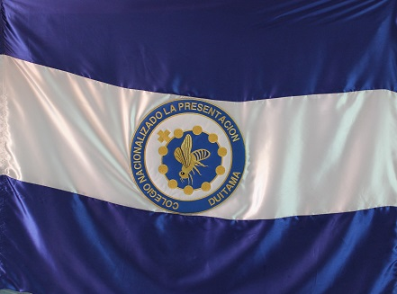

Los colores blanco y azul testimonian que la Congregación de las Hermanas de la Caridad Dominicas de la Presentación es esencialmente Mariana. El Blanco de la bandera significa la PIEDAD y limpieza de corazón de la Santísima Virgen María. El Azul, la SECILLEZ e interioridad de la Virgen María, la Madre de Nuestro Salvador.
La Cruz y el Rosario, signos del amor de Dios hacia nosotros, representan los misterios de Nuestro Señor Jesucristo, a los cuales la Santísima Virgen María estuvo íntimamente unida. La abeja, el color blanco y el azul simbolizan, respectivamente, el Trabajo, la Piedad y la Sencillez. Han de caracterizar a toda alumna de la Presentación: el Trabajo con su expresión de servicio, la Piedad y la Sencillez.
Piedad, Sencillez y Servicio.
En espíritu todas unidas En abrazo fraterno de amor Fresca savia de tronco robusto Sueno azul de la Presentación De ideales conquista gloriosa Codiciándolo esta el corazón Cual cosecha de estrellas fulgentes Y trigales en constelación Nuestras almas cual linfas bullentes Sean caliz de todo sabor, Ritmo alegre y eterno que late Al latir de la Presentación
Juventud animad vuestro brazo Nuestro pecho se enciende en ardor, Y marchemos,las manos unidas como hermano y hermana hacia Dios
En espíritu todas unidas...
En panales de amor libar puedan Corazones, piedad y virtud Cuando posen su planta en el mundo y en sus huellas florezca la luz Toda alumna entronice en su vida Esta sola palabra: Verdad, Sencillez el crisol de sus obras Y el camino de su integridad Del deber en el yunque sagrado el trabajo también redentor, pueda hacer nuestra vida fecunda para darla y servir la hizo Dios
Tras las huellas que suben al Templo...
Coloquemos del alma una flor Ella guía, modelo y ejemplo Y tras Ella la Presentación